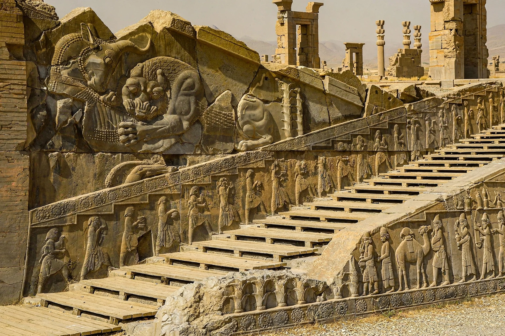

Achaemenid Empire

The Apadana reliefs at Persepolis, showing delegations from subject nations bringing tribute
The Achaemenid Empire (c. 550–330 BC), also called the First Persian Empire, was founded by Cyrus the Great and grew to be the largest empire of the ancient world, ruling perhaps 44 per cent of the world's population at its height. From capitals at Pasargadae, Persepolis, Susa and Babylon it governed a multi-ethnic realm from the Balkans and Egypt to the Indus Valley, administered through satraps (provincial governors), linked by royal roads and a standard coinage, and noted for relative tolerance of local religions and customs.
Expansion
Cyrus, king of the small Persian kingdom of Anshan, defeated the Medes (550 BC), Lydia (547 BC) and Babylon (539 BC). His son Cambyses II added Egypt (525 BC). Darius I (r. 522–486 BC) reorganised the empire's finances, law and administration, built the Royal Road from Susa to Sardis and the palace-city of Persepolis, and extended rule into Thrace and the Indus valley; his invasions of Greece were checked at Marathon (490 BC), and his successor Xerxes I was repelled at Salamis and Plataea (480–479 BC).
Fall
The empire endured for two more centuries, wealthy but increasingly strained by court intrigue, satrapal revolts and Greek interference. Between 334 and 330 BC Alexander the Great destroyed its armies at Issus and Gaugamela, occupied Persepolis and Babylon, and pursued the last king, Darius III, who was murdered by his own satrap Bessus. The Achaemenid state vanished, but its administrative model shaped every later empire in the region.